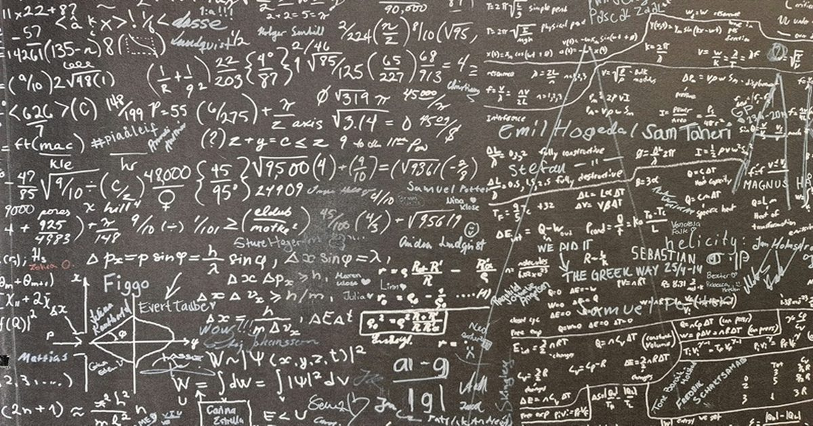

Математический прорыв OpenAI оказался под вопросом — учёные нашли расхождение в доказательстве
Математический прорыв OpenAI начал вызывать вопросы.
Учёные сравнили опубликованное доказательство по уравнениям Навье — Стокса с его алгоритмической Lean-версией и нашли расхождения: в нескольких ключевых местах машинный вариант, проверяемый на компьютере, содержит более слабые утверждения.
Это ещё не опровержение, но почва для сомнений уже вполне плодородная Источник изображения: Thomas T /unsplash.com